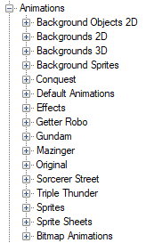

Creating Animations
The Animations node contains animations, backgrounds, background sprites, background objects, sprite sheet, bitmap animations and sprites.
Just like the Cutscene editor, the Animation editor is a generic editor used by many things, you can delete unused timelines in the Timelines folder.
Put the sprites you need into the assets folders needed before starting. We won’t cover backgrounds much but you’ll be fine with sticking to just 2D backgrounds. Backgrounds objects are a fancy collection of sprites you can strap together to give the illusion of 3D. You can then use those inside a 2D background.
We’ll explain the editor and then go through the process of creating the basic animations you’d want for a SRW game, Default, Move In, Attack Start, Attack Hit, Attack Miss and Attack Destroy.